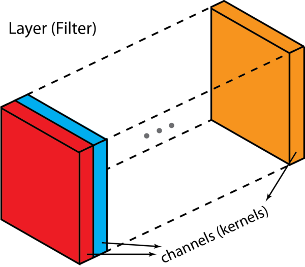
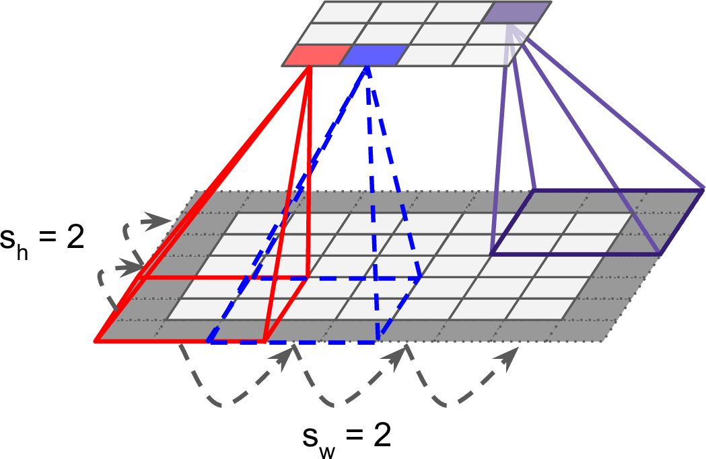
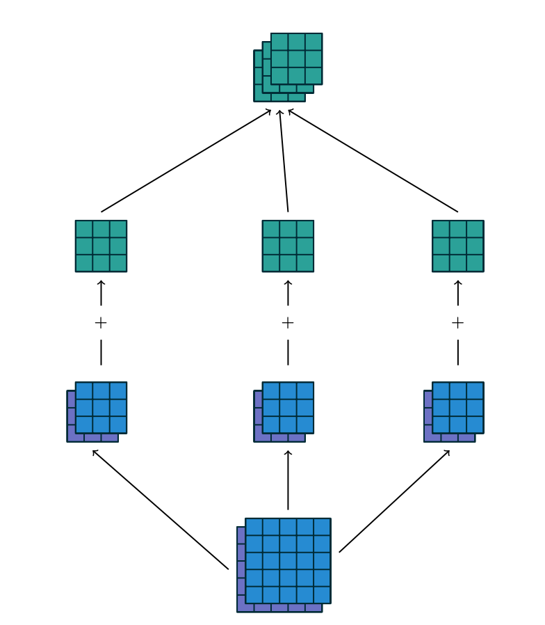
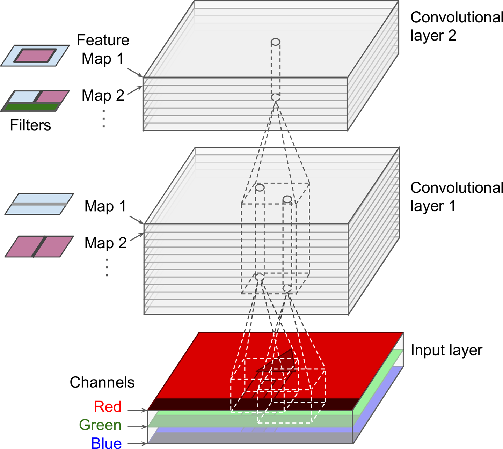
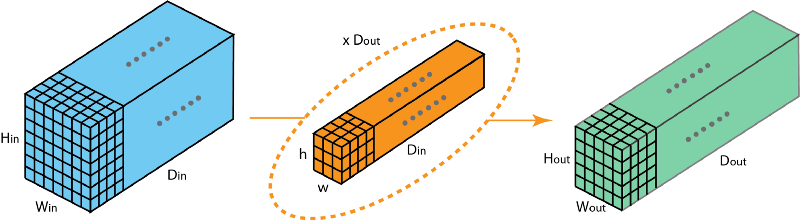
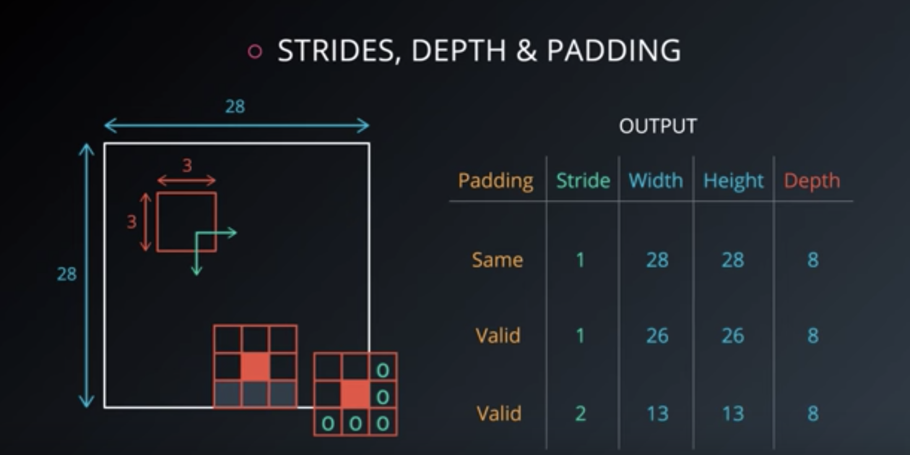
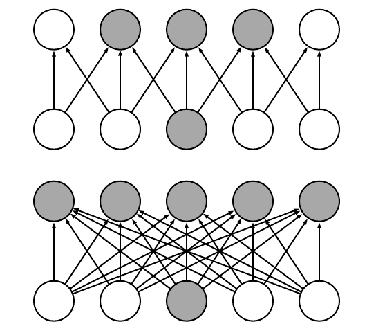
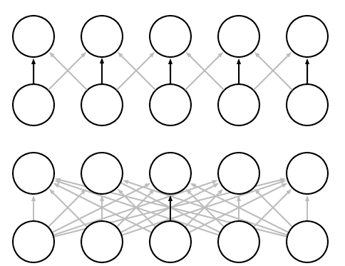
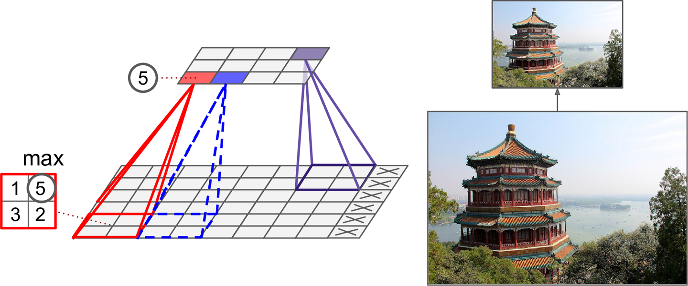
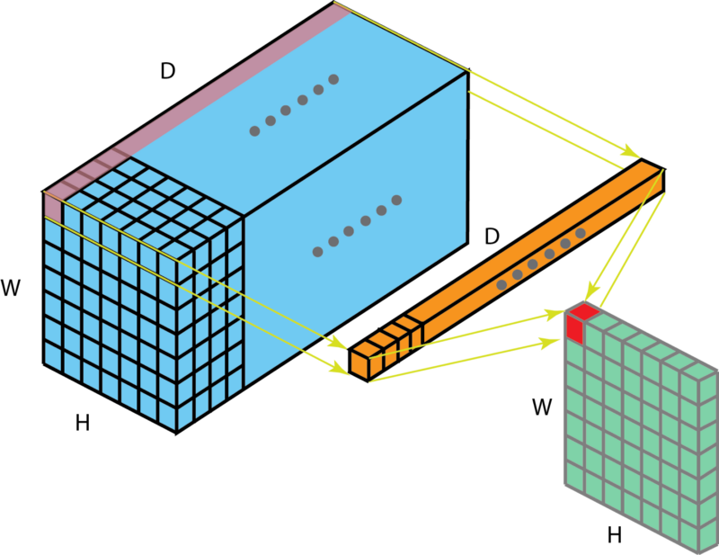

CNN Architectures#
Convolutional Layer#
In the convolutional layer the first operation a 3D image with its two spatial dimensions and its third dimension due to the primary colors, typically Red Green and Blue is at the input layer, is convolved with a 3D structure called the filter shown below.
 Each filter is composed of kernels - source
The filter slides through the picture and the amount by which it slides is referred to as the stride \(s\). The stride is a hyperparameter. Increasing the stride reduces the size of your model by reducing the number of total patches each layer observes. However, this usually comes with a reduction in accuracy.
It’s common to have more than one filter. Different filters pick up different qualities of the receptive field. Apart from the stride, the spatial dimensions of the filter (height, width, num_kernels) the number of filters is another hyperparameter of a convolutional layer.
This means that typically we are dealing with volumes (3D tensors) and of course if someone adds the fact that we do processing in minibatches we are typically dealing with 4D tensors that contain input feature maps. Lets look at a single feature map visualization below of the convolution operation.
 Convolutional layer with a single feature map. We can see the strides \((s_h, s_w)\), the zero padding as well as the receptive field in the produced feature map.
In the figure below the authors of this paper have also animated the operation. Blue maps are inputs, and cyan maps are outputs.From left to right: (a) No padding, no strides, (b) Arbitrary padding, no strides, © Half padding, no strides, (d) Full padding, no strides.


Some additional annimations are shown below. From left to right: (a) No padding, with strides, (b) Padding, with strides, © Padding, with strides (odd).


In general though in practice we are dealing with volumes due to the multiple feature maps & kernels involved. Its important to understand the figure below. Its a direct extension to the single feature map figure above. The difference is that each neuron in each feature map of layer \(l\) is connected to all neurons of the corresponding receptive field of layer \(l-1\) just as before but now these connections extend to all feature maps of layer \(l-1\). In other words we connect each neuron in the feature map of layer \(l\) to the corresponding receptive volume (3D array) of neurons in the layer below.
In the class we will go through the example below.

There are two steps involved. Notice that the number of input feature maps is \(M_{l-1} = 2\), while the number of output feature maps is \(M_{l}=3\). We therefore have three filters of spatial dimension \([height, width]=[3 \times 3]\) and depth dimension of 2. In the first step each of the three filters generates a correlation result for each of the 2 input feature maps.
\(z(i,j) = \sum_u^{height} \sum_v^{width} x(i+u, j+v) w(u,v)\)
In the second step we sum over the correlations for each of the three filters separately. Equivalently is like taking a volume cross correlation and extend the equation above accordingly.
\(z(i,j,k_l) = \sum_u^{height} \sum_v^{width} \sum_{k_{l-1}=1}^{M_i} x(i+u, j+v, k_{l-1}) w(u, v, k_{l-1}, k_l)\)
The figure below illustrates the input feature map to output feature map mapping directly i.e. without the intermediate step of the example above.
 Convolutional layers with multiple feature maps. We can see the receptive field of each column of neurons of the next layer. Each column is produced by performing multiple convolutions (or cross correlation operations) between the volume below and each of the filters.
In each layer we can have in other words, as was shown in the example above, input and output feature maps of different depths.
 2D convolution that produces a feature map with different depth than the input feature map
Zero Padding#
Each feature map “pixel” that results from the above convolution is followed by a RELU non-linearity i.e. RELU is applied element-wise. Few words about padding. There are two types: same padding where we add zeros at the edges of the picture and valid padding where we dont. The reason we pad with zeros is to maintain the original spatial dimensions from one convolution layer to the next. If we dont, very soon we can end up with deep architectures with just a one “pixel”.
Lets see a complete animated example that includes padding. You can press the toggle movement button to stop the animation and do the calculations with pencil and paper.
source: CS231nEach output spatial dimension (height is shown here) is in general given by \(⌊ \frac{height+2p-k}{s} ⌋ + 1\), where \(p\) is the amount of padding, \(k\) is the square kernel size, \(s\) is the stride. In the animation above, \(p=1, k=3, s = 2\). In yet another example of sizing - output depth is a function of the number of kernels but the spatial dimensions depend as the equation above specified on stride, padding and kernel size (usually square).

What the convolution / operation offers#
There are two main consequences of the convolution operation: sparsity and parameter sharing. With the later we get as a byproduct equivariance to translation. These are explained next.
Sparsity#
In DNNs, every output unit interacts with every input unit. Convolutional networks, however, typically have sparse interactions(also referred to as sparse connectivity or sparse weights). This is accomplished by making the kernel smaller than the input as shown in the figure above. For example,when processing an image, the input image might have thousands or millions of pixels, but we can detect small, meaningful features such as edges with kernels that have much smaller receptive fields.
 For a specific input unit,\(x_3\), we mark the output units in that are affected by this unit. (Top) When is formed by convolution with a kernel of width 3, only three outputs are affected by x. (Bottom)When is formed by matrix multiplication, connectivity is no longer sparse, so all the outputs are affected by \(x_3\).
Parameter sharing#
In CNNs, each member of the kernel is used at every feasible position of the input. The parameter sharing used by the convolution operation means that rather than learning a separate set of parameters for every location, we learn only one set.
 Parameter sharing. Black arrows indicate the connections that use a particular parameter in two different models. (Top)The black arrows indicate uses of the central element of a 3-element kernel in a convolutional model. Because of parameter sharing, this single parameter is used at all input locations. (Bottom)The single black arrow indicates the use of the central element of the weight matrix in a fully connected model. This model has no parameter sharing, so the parameter is used only once.
The particular form of parameter sharing causes the layer to have a property called equivariance to translation. This means that a translation of input features results in an equivalent translation of outputs. So if your pattern 0,3,2,0,0 on the input results in 0,1,0,0 in the output, then the pattern 0,0,3,2,0 might lead to 0,0,1,0
As explained here this should not be confused with invariance to translation. The later means that a translation of input features does not change the outputs at all. So if your pattern 0,3,2,0,0 on the input results in 0,1,0 in the output, then the pattern 0,0,3,2,0 would also lead to 0,1,0.
For feature maps in convolutional networks to be useful, they typically need both equivariance and invariance in some balance. The equivariance allows the network to generalize edge, texture, shape detection in different locations. The invariance allows precise location of the detected features to matter less. These are two complementary types of generalization for many image processing tasks.
In a nutshell, in images, these properties ensure that the CNN that is trained to detect an object, can do its job irrespective on where the object is located in the image.
Pooling#
Pooling was introduced to reduce redundancy of representation and reduce the number of parameters, recognizing that precise location is not important for object detection.
The pooling function is a form of non-linear function that further modifies the result of the RELU result. The pooling function accepts as input pixel values surrounding (a rectangular region) a feature map location (i,j) and returns one of the following
the maximum,
the average or distance weighted average,
the L2 norm.
A pooling layer typically works on every input channel independently, so the output depth is the same as the input depth. You may alternatively pool over the depth dimension, in which case the image’s spatial dimensions (height and width) remain unchanged, but the number of channels is reduced.
Despite receiving ample treatment in Ians Goodfellows’ book, pooling has fallen out of favor. Some reasons are:
Datasets are so big that we’re more concerned about under-fitting.
Dropout is a much better regularizer.
Pooling results in a loss of information - think about the max-pooling operation as an example shown in the figure below.
All convolutional networks where the pooling is replaced by a CNN with larger stride can do better.
 Max pooling layer (2 × 2 pooling kernel, stride 2, no padding)
Note
To further understand the latest reservations against pooling in CNNs, see this summary of Hinton’s capsules concept.
1x1 Convolutional layer#
The 1x1 convolution layer is met in many network architectures (e.g. GoogleNet) and offers a number of modeling capabilities. Spatially, the 1x1 convolution is equivalent to a single number multiplication of each spatial position of the input feature map (if we ignore the non-linearity) as shown below. This means that leaves the spatial dimensions of the input feature maps unchanged unlike the pooling layer.
 1x1 convolution of a single feature map is just scaling - the 1x1 convolution is justified only when we have multiple feature maps at the input.
1x1 convolution of a single feature map is just scaling - the 1x1 convolution is justified only when we have multiple feature maps at the input.
The most straightforward way to look at this layer is as a cross feature map pooling layer. When we have multiple input feature maps \(M_{l-1}\) and 1x1 filters 1x1x\(M_{l-1}\) (note the depth of the filter must match the number of the input feature maps) then we form a dot product between the feature maps at the spatial location \((i,j)\) of the 1x1 filter followed by a non-linearity (ReLU). This operation is in other words the same operation of a fully connected single layer neural network whose neurons are those spanned by the single column at the \((i,j)\) coordinate. This layer will produce a single output at each visited \((i,j)\) coordinate.
This idea can be expanded to multiple layers as described in this paper.

When we have multiple \(M_l\) layers of size 1 x 1 x \(M_{l-1}\) then, effectively, we produce multiple feature maps one for each 1x1 layer and this is a good way to reduce the number of feature maps at the output of this layer, with benefits in computational complexity of the deep network as a whole.
Known CNN Architectures#
A summary of well known CNN networks are here article with this update as a reference. This summary will be important to you as a starting point to develop your own understanding of very well known CNNs. After you read the corresponding papers in arxiv you will be able to recall key design patterns and why those patterns came to be.